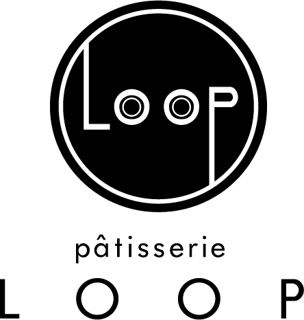

（ここに店舗様の簡単な紹介文。例：緑豊かな住宅街に佇む、地域に愛されるパティスリー。手作りの温かみあふれるケーキが人気です。）
導入前の課題
（「こんなことで悩んでいました」という具体的な内容を400～600字程度で記述。必要に応じて専用写真も挿入）

導入のきっかけ・決め手
（「『いつでもケーキ』を選んだ理由」を具体的に記述。専用写真も挿入）
導入後の変化・成果
（「導入してこう変わった！」という具体的な成果やお客様の反応などを記述。数値データやグラフ画像などがあれば効果的。専用写真も挿入）

オーナー様の声・今後の展望
（LP掲載文より詳細なコメントや、今後の「いつでもケーキ」の活用についてなどを記述。）
店舗情報
店舗名： パティスリー・ループ
住所： 〒458-0903 愛知県名古屋市緑区有松愛宕1201
電話番号： 052-622-7890
営業時間： 9:30～19:00
定休日： 月曜日・火曜日（祝日の場合は営業）
公式サイト： https://looploop.net/